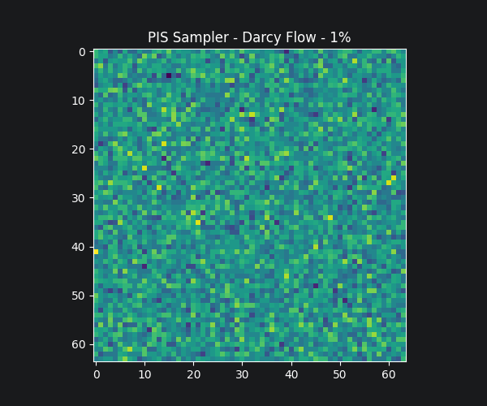
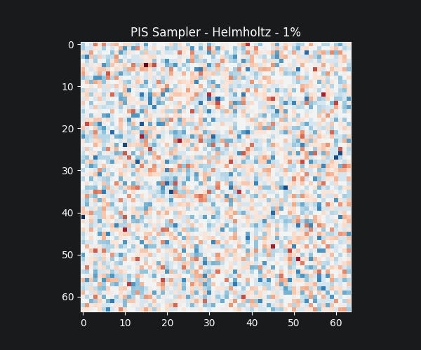
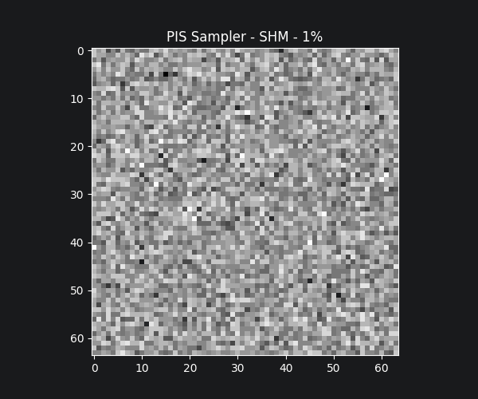

Explore the deterministic straight-path probability flow of the Set-Conditioned Flow Matching framework. Drag the sliders to observe the inversion process from noise (t=0) to high-fidelity physical fields (t=1).


